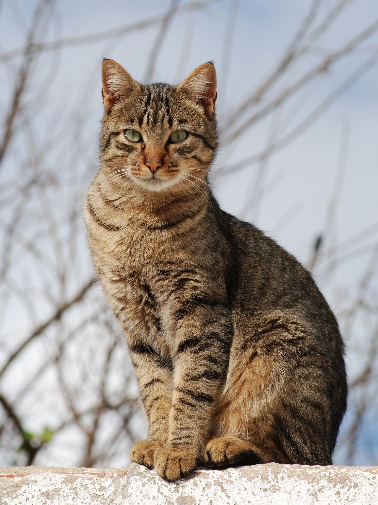

Gato Tigrado
O Gato Tigrado tem variações de cores, podendo ser
marrom, chocolate, canela,
amarelo, cinza,entre várias outras combinações.
Comportamento do gato cinza tigrado
- Instituto Federal
- Câmpus São Paulo
- Gato Tigrado
- O gato cinza tigrado tinha vantagens na natureza
- A marca de um "M" na testa dos Greys Tabys é rodeada de lendas
- A genética dos gatos cinzas malhados
Diferentes pelagens
- marrom
- chocolate
- canela
- amarelo
- cinza
